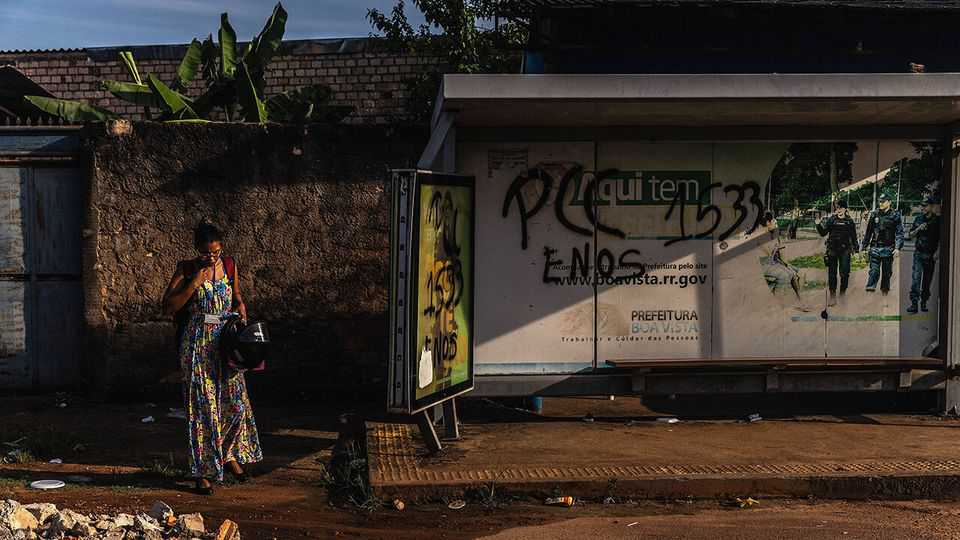

Brazil’s gangsters: less murder, more money
Crime is softer, but it affects more Brazilians than ever before

Sep 17th 2026
The world’s largest civilian fleet of bullet-proof cars roams Brazilian cities. Security guards with automatic weapons patrol posh shopping centres. Armed robbery, carjacking and murder dominate the news. Despite violent crime having fallen sharply in recent years (see chart), voters still cite crime as Brazil’s biggest problem. Brazilians are frightened.
Changing business models help explain this apparent paradox. In recent years Brazil’s two main gangs, First Capital Command (PCC) and Red Command (CV), have diversified beyond drug-trafficking. The Brazilian Forum on Public Security, a think-tank in São Paulo, says gangs made just $3bn from cocaine in 2022, but brought in $26bn from stolen fuel, illegal gold, contraband cigarettes and alcohol. Another $36bn came from scams and selling stolen phones. Crime now generates revenue equivalent to about 5% of GDP.

These activities are inherently less violent than drug-trafficking. The PCC and the CV are entrenched and relatively stable. So Brazil’s murder rate reached a record low of 19 per 100,000 people in 2025, down from more than 30 a decade ago. Robberies fell by half between 2018 and 2024, but theft of smartphones in rich neighbourhoods is rising. Online fraud increased more than five-fold in the same period.
A far larger number of people are impacted by the gangs’ new businesses than are affected by violence associated with drug-trafficking. This expansion has helped foster fear. “Homicides are concentrated in poorer areas and that generates less clamour,” says Carolina Ricardo of Sou da Paz, a research institute in São Paulo. But phone theft and online scams “affect everyone, rich and poor alike”. The odds of becoming a victim are high: over 800,000 phones were stolen in Brazil last year.
As criminals have become less violent they have doubled down on corrupting institutions. According to the federal police, during local elections in 2024 gangs tried to influence political campaigns in at least 42 towns and cities, a record. The PCC is thought to have spent hundreds of millions of dollars to support candidates in the state of São Paolo alone. Several mayors have since been removed from office for having links to gangs.
Police themselves are targeted with bribes. In one incident, officers in São Paulo’s elite force allegedly sold video testimony of a PCC informant to the gang for $1m. This put the whistleblower’s life in danger and let a PCC leader escape capture. Three recent former chiefs of police in Rio de Janeiro are currently in jail or under investigation for alleged links to organised crime.
Right-wing presidential candidates in the upcoming general election have seized on the heightened fear created by this crime wave. All of them, including the right-wing front-runner, Flávio Bolsonaro, promise to enact a version of “the Bukele model”. That refers to El Salvador’s strongman, Nayib Bukele, who has lowered his country’s murder rate by sweeping suspected gangsters into prison without a trial, incarcerating 2% of all adults.
But Bukeleism is unlikely to work in Brazil. The PCC and the CV are more sophisticated than El Savador’s extortionists, their businesses much harder to track and disrupt. The violent crackdown that would have to accompany a mass incarceration would disrupt the existing equilibrium, risking more violence. Brazil’s cramped prisons, which were built for 500,000 people but now squash in 727,000 inmates, also present challenges. Gangs use prisons as “a college for training and a recruitment centre for new members”, says Robert Muggah of the Igarapé Institute, a think-tank in Rio. They offer new inmates protection if they join, and provide access to goods like mobile phones. Small-time criminals or those stuck in legal limbo—over 200,000 Brazilian inmates have not been sentenced—leave jail as hardened gangsters. Many of South America’s biggest gangs were born inside prisons.
Beefing up investigations would be a better bet for lowering crime. A suspect is charged in less than 40% of murders in Brazil, compared with over 90% in parts of western Europe. In the most violent states, such as Bahia, the rate can be just 13%. This creates a sense of impunity. For lesser crimes, such as theft, it is often as low as 5%. Police are often poorly trained. Some are on the take. Lack of co-ordination hurts. Security is mostly the preserve of state governments. Each has military police in charge of patrolling the streets and civil police in charge of investigations. Rather than working together, they “often compete”, says a state prosecutor.
Politicians do not need to look abroad to find models of success. Under governor Eduardo Leite in the state of Rio Grande do Sul, in southern Brazil, the murder rate has fallen by half since 2017. Mr Leite launched a data platform that shows criminal activity across municipalities in real time. This revealed that more than 90% of murders occurred in just 23 of the state’s 497 municipalities. Police resources and government social programmes were focused on the hotspots. Alvorada, a violent slum on the outskirts of Porto Alegre, the state capital, has seen its murder rate plummet from 113 per 100,000 in 2017 to 22 today. States like Goiás have also managed to reduce murder by improving co-ordination between police and prosecutors.
President Luiz Inácio Lula da Silva, the ageing left-wing incumbent known as Lula, seems to understand the issue. In May he promised $2bn for a public-security package to buy new technology and strengthen investigations. He has also tabled a bill in Congress to split the Ministry of Public Security out from the justice ministry. The newly independent ministry is intended to help the federal police, who are well funded and trained, to work with state and municipal police.
The promise of this kind of collaboration was on display in August 2025. A 1,400-strong joint task-force dismantled a scheme through which the PCC had laundered almost $10bn from the sale of stolen fuel into fintech firms and investment funds between 2020 and 2024. It was the most successful operation against organised crime in years, but voters hardly noticed. The problem, says Maria Isabel Couto of Fogo Cruzado, a research centre in Rio which monitors crime, is that Lula has been president for over 11 of the past 23 years. “Whenever he has a proposal about public security, people ask: ‘Well, why haven’t you already done this?’”
Instead, many Brazilians cheered last October, when police carried out violent raids on two Rio favelas, leaving over 120 people dead. While politicians fail to convince voters of the benefits of substance over spectacle, crime will plague Brazil. ■